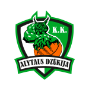

DZUKIJA ALYTUS

Įkurimo data 2012
Vyr. treneris - Ramūnas Cvirka
Komandos sudėtis:
| Pozicija |
Numeris |
Pavardė, Vardas |
| Gynėjas |
1 |
Newkirk, Joshua |
| Gynėjas |
4 |
Zigmantavičius, Martynas |
| Gynėjas |
5 |
Frye, Dylan |
| Atakuojantis gynėjas |
53 |
Pocevičius, Martynas |
| Kraštinis puolėjas |
3 |
Cibulskas, Tadas |
| Kraštinis puolėjas |
7 |
Pačėsas, Tomas |
| Kraštinis puolėjas |
4 |
Lukauskis, Mindaugas |
| Kraštinis puolėjas |
8 |
Zigmantavičius, Martynas |
| Kraštinis puolėjas |
12 |
Furmanavičius, Justas |
| Kraštinis puolėjas |
17 |
Aranitovič, Aleksandar |
| Kraštinis puolėjas |
21 |
Jomantas, Artūras |
| Vidurio puolėjas |
14 |
Čepukaitis, Vaidas |
| Vidurio puolėjas |
16 |
Lapeta, Adam |